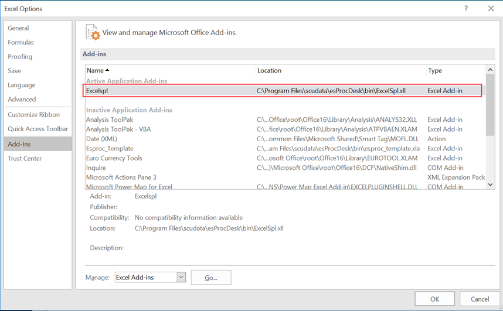
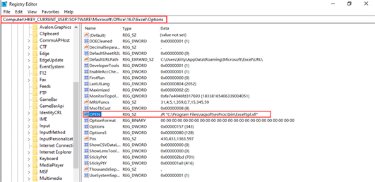
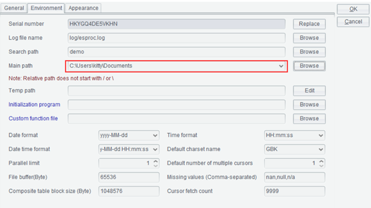

Automatically Install Excel Add-in
This is an esProc Desktop edition feature.
Open SPL IDE using the administrator privilege before installing Excel add-in automatically. Then use spl() function to execute the SPL script in Excel, gets result set, and populates it in Excel.
The following steps can be skipped if the Automatically Install Excel Add-in option is checked.
1 Environment
The 64-bit (not 32-bit) version of both Windows and Excel is required, otherwise an exception will occur.
To check whether it is 64-bit:
1. For Windows: Click Settings > System > About to find the information.

2. For Excel: Open Excel and click Account > About Excel to get the information on the pop-up dialog, as shown below:
|
About Microsoft® Excel® 2019 Microsoft® Excel® 2019MSO (Version 2202 Build 16.0.14931.20116) 64Bit Product ID: 00405-32554-86889-AAOEM Session ID: 5DCA85DD-F5BE-4570-8CE4-4D56EF93273D |
About language: Make sure the esProc Desktop you are installing uses the same language as your operating system. That is, install the English version of esProc Desktop if you are using an English-version of OS and the Chinese version of esProc Desktop if your OS is Chinese-version, otherwise issues like messy code will occur.
If messy code or other problems occur after the English version of esProc Desktop is installed under an English-version of OS, check OS configurations in Settings > Time & language > Language to make sure the current language selected on Windows display language menu is English.
2 Necessary files
ExcelSpl.xll: The add-in file located in esProcDesk/bin under esProc Desktop installation directory;
scu-Excel-xll-2.10.jar and xll4j-0.0.2.jar: The necessary jar files located in esProcDesk/lib under esProc Desktop installation directory;
ExcelSpl.ini: The configuration file located in esProcDesk/config under esProc Desktop installation directory;
esproc_template.xla: The macro file located in esProcDesk/bin under esProc Desktop installation directory.
3 Load ExcelSpl.xll add-in for Excel
Open Excel, click Options > Add-ins and go to Manage Excel add-ins to have the pop-up Add-ins dialog, where you continue to click Browse to choose the add-in file ExcelSpl.xll. Make sure the new add-in is selected and then restart Excel. Below shows the new add-in after it is successfully loaded:

spl() function will be installed to Excel after the add-in file is successfully loaded.
Problems you are probably to encounter in this phase:
Problem 1:
After you select add-in file ExcelSpl.xll and click OK, the mouse begins to spin forever and refuses to move on to the next step. In this case you can forcibly terminate Excel and restart it.
You will see message ¡°Failed to load XX add-in; do you want to disable it?¡± after restarting Excel.
Click Yes, and re-load the add-in according to same directions.
Problem 2:
After you select add-in file ExcelSpl.xll and click OK, the mouse begins to spin forever and refuses to move on to the next step. In this case you can forcibly terminate Excel and restart it.
There is no message after restarting Excel. But when you open the Add-ins window, you find the add-in is successfully loaded (the previous screen containing successfully loaded add-in displays).
Problem 3:
After you select add-in file ExcelSpl.xll and click OK, the mouse begins to spin forever and refuses to move on to the next step. In this case you can forcibly terminate Excel and restart it.
There is no message after restarting Excel. When you open the Add-ins window, you find the add-in load failed. Then you repeat the same operations, trying to load the add-in, but fail again by getting stuck at the same point.
In this case, the solution is to close Excel, open Windows registry, and add the following item.

Note:
1. The value of OPEN item is string /R followed by a string enclosed within the double quotation marks. The content of the latter string is add-in ExcelSpl.xll¡¯s full-path file name;
2. The path under which the registry¡¯s OPEN item is added may vary depending on versions of Excel. It is machine\HKEY_CURRENT_USER\SOFTWARE\Microsoft\Office\16.0\Excel\Options for Excel2019, and machine \HKEY_CURRENT_USER\SOFTWARE\Microsoft\Office\15.0\Excel\Options with lower versions. Please find the location according to the Excel version you are using.
Now you open Excel and find that the add-in is listed in the Add-ins window, which means it is successfully loaded.
4 Import macro file for Excel
Find macro file esproc_template.xla in esProcDesk\bin directory under esProc Desktop installation directory and copy it to folder ¡¾esProc Desktop installation directory¡¿/esProcDesk/bin, such as C:\Program Files\Microsoft Office\Office16\XLSTART. The macro file will be automatically imported at the startup of Excel only when it is put under this folder. The import will fail if it is placed in any other folder.
Then, in Excel, click Options > Trust Center > Trust Center Settings > Macro Settings, select Enable all macros, and restart Excel.
Note:
1. Different versions of Excel can have different paths for the startup folder, so make sure you open your Excel, find the correct path, and copy the macro file esproc_template.xla to it.
2. The macro file defines a macro and its hotkey (Ctrl-Enter) to handle multiple return values. The hotkey can be changed if it conflicts with a hotkey that already exists.
3. If spl() function returns a single value, the macro file won¡¯t be used and loading the macro file is not necessary.
5 Configure SPL IDE main path
To deploy the SPL IDE main path, the script file to be invoked should be placed in the target directory in advance, otherwise the search will fail. To deploy main path, follow the directions below:
Open SPL IDE, click Tool > Options, and select Environment to find Main path:

Make note that you need to restart SPL IDE and Excel to make the configuration take effect.
6 Logs
You can view exceptions in the log file. The file¡¯s path is %appdata%\esproc\tmp\Excel.log.
7 Using spl() Function in Excel
Once the add-in is installed and configured, the spl() function will be added to Excel for executing a SPL script and obtaining result set in a specific Excel cell. The function returns a single value, a one-dimensional array or a two-dimensional array.
spl() function has two syntactic formats:
l spl( exp, arg1, ¡ )
Parameters:
|
exp |
A SPL expression string preceded by =. A parameter is represented by the question mark. ?1 represents the first parameter, ?2 represents the second one, and so on. |
|
arg1,¡ |
Parameter values. There can be none or multiple parameters (30 at most). Parameter values can be constants, or a referenced Excel cell or range of cells. |
In a complex computation, it executes a SPL script file using the following format:
l spl(splx(¡), ¡ )
Parameters:
|
splName() |
Script file name without an explicit extension, whose default is .splx followed by parentheses (); Parameters defined in the script, which correspond to values listed after the comma in sequence. |
|
arg1,¡ |
Same description as in the previous syntax |
Find examples of using esProc Excel Add-in in ¡°User Guide to esProc Excel Add-in¡±.